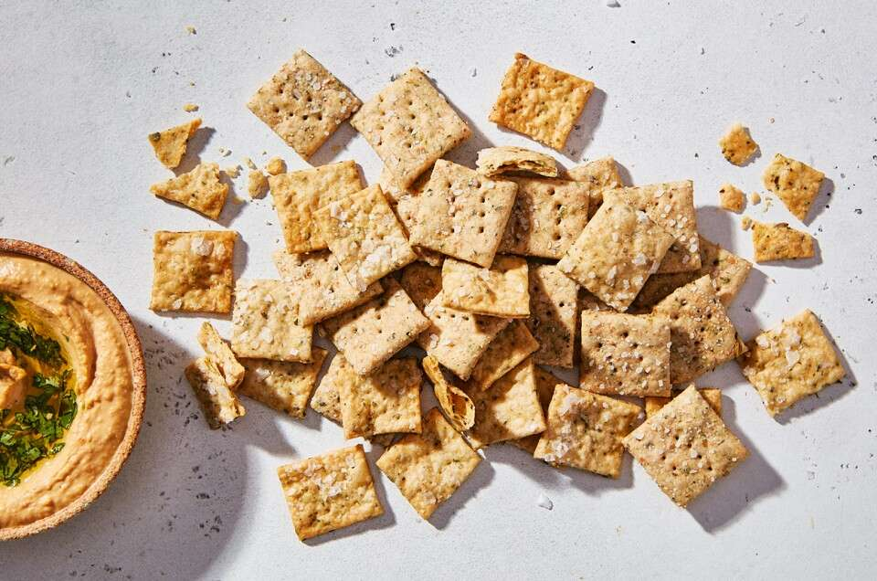

Sourdough Crackers

Ingredients
- 1 cup (227g) sourdough starter
- 1 cup (113g) flout (any kind)
- 1/2 tsp salt
- 4 tbsp butter (unsalted)
- 2 tbsp dried herbs (any kind)
- Oil, for brushing
- Course salt for sprinkling on top
Preparation
- Mix together the sourdough starter, flour, salt, butter and herbs.The dough should be smooth and cohesive, and not sticky.
- Divide the dough in half and shape each half into a small rectangular slab. Cover with plastic wrap and refrigerate for 30 minutes, or until the dough is firm.
- Preheat oven to 350 degrees F.
- Lightly flour two pieces of parchment paper, the dough slabs, and your rolling pin.
- Place one piece of dough onto each floured piece of parchment paper and roll each until they are an even 1/16" thick.
- Transfer each dough sheet (including parchment paper) onto baking sheets. Lightly brush the dough sheets with oil and sprinkle salt on top.
- Cut each dough sheet into 1 1/4" squares using a pizza roller.
- Prick each cracker a couple times with a fork to prevent them from puffing up as they bake.
- Bake the crackers for 20-25 minutes, until they're starting to brown around the edges. Midway through, rotate the baking sheets to help them brown evenly.
- When fully browned, remove the crackers from the oven and place the pans on a rack to cool.
- Store crackers in an airtight container at room temperature for up to a week, or freeze for longer storage.